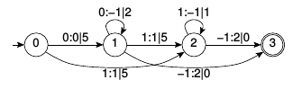

| Tutorial 6 - Search processor |
|
Contents |
Related Topics |
Synopsis
Explains how to use the search processor for decoding wFSTs.
This is an incomplete, preliminary document and subject to changes.| Introduction into wFSTs |
|
First we will start with a short introduction into weighted finite state transducers (wFSTs). A wFSTs A = (Z,I,F,X,Y,S,E) consisting of:
- a finite set of states Z = { z0,z1,…},
- a set of initial states I ⊆ Z,
- a set of final states F ⊆ Z,
- an input alphabet X = { ϵ,x0,x1,…},
- an output alphabet Y = { ϵ,y0,y1,…},
- a weight semiring S={K,⊕,⊗,―0,―1} and
- a multi-set of transitions E ⊆ Z ×X ×Y ×K ×Z.
A transition e ∈ E leads from state z(e) to state z′(e). Thereby the input symbol x(e) is consumed and the output symbol y(e) is emitted. w(e) denotes the weight of the transition.
A path U = (e1,…,eK) is a sequence of connected transitions with z′(ei) = z(ei+1) with the path weight w(U). The path with the best weight from any of the initial states to the state z is denoted by U*(z).
This best path is exactly the item of interest for automatic pattern recognition. It represents the recognition result with the best matching to the observed feature vector sequence. The task of the search algorithm is to find the best path.
To get a bit more familiar with wFSTs we will introduce a small example automaton. It will be used through the whole tutorial for demonstration of the search processor. Below you see the example in openfst text file representation. The example is named "rn" which stands for recognition network. Each line in the text file is one transition. Represented by it's initial state index, the finial state index, the input symbol index, the output symbol index and the weight. A line (like the last one in the example) with one number marks this state as final state.
Example rn.txt
0 1 0 0 5
0 2 1 1 5
1 1 0 -1 2
2 2 1 -1 1
1 2 1 1 5
1 3 -1 2 0
2 3 -1 2 0
3
If you save it to a text file named "rn.txt", you can load and display the wFST with the following dLabPro code.
dLabPro>fstrn; dLabPro> "rn.txt" "fsm-t" rnstdfile-import; dLabPro> rn
In UASR there is a function named -FST_render which can be used to get a graphical representation of the automaton. Here you see the states and it's transitions. Final states are marked with double circles and the transitions are labeled with: "Input symbol : Output symbol | Weight".
For more details on wFSTs and supported operations in dLabPro see manual of class fst.
| Search processor interface |
|
The search processor in dLabPro provides a algorithm independent interface to several search algorithms.
It is implemented in the class fstsearch.
Here we will give some examples how to use the search processor and how to configure it.
Timevariant decoding
Timevariant decoding is the most common decoding method in acoustic pattern recognition.
In addition to the recognition network (see previous section) there is a vector weights which change in every timestep.
Usually each vector is derived from feature vector of that time step by the Gaussian mixture model (see class gmm and hmm).
But the origin of the timevariant weights does not influence the search algorithm.
The timevariant weight vectors can be combined to a timevaraint weight matrix. For demonstration we will generate a small matrix with a vector dimension of two and four time steps or vectors:
dLabPro> data w;
dLabPro> {
{ 2 0 }
{ 0 9 }
{ 0 3 }
{ 6 0 }
} w =;
The timevariant weights are connected to the recognition network by the input symbols of the network. In traversing a path for each transition the total transition weight consists of the timeinvariant weight (w(e)) in the automaton and the timevariant weight of the current time step and the vector element indexed by the input symbol of the transition (w(k,x(e)). Transitions with empty input symbol (x(e)=-1) have no timevariant weight.
The following code initializes a search processor s and the result automaton res.
Then the recognition network rn is loaded by -load.
The second argument 0 indicates that the first unit within the fst object should be used.
In the next step the search is performed with -isearch by using the timevariant weight matrix w.
The option /final forces the search to run until a final state is reached.
Through backtracking with -backtrack we get the best decoded path in form of another wFST.
The loaded recognition network can be freed by -reset.
dLabPro>fstsearchs; dLabPro>fstres; dLabPro> rn 0 s-load; dLabPro> w s/final-isearch; dLabPro> res s-backtrack; dLabPro> res
The result automaton is a chain of the output symbols of the best path.
The transition weights are combined total transition weights.
To get the whole path (every transition used in the recognition network)
we have to change the backtracking mode bt before decoding:
dLabPro> "t" s -setbt; dLabPro> w s/final-isearch; dLabPro> res s-backtrack; dLabPro> res
Now we can see by comparing input and output symbols with the recognition network,
that the best path with that timevariant weight matrix starts from state 0 to state 1
the stays at state 1 for two time steps before finishing over state 2.
The transition weights in the result object nevertheless represent total transition weights,
which is the combination of timeinvariant and timevariant weight.
In the example you see that for the first transition the timeinvariant weight 5 is combined with the timevariant weight 2
to 7 using the tropical semiring multiplication operation which corresponds to mathematical addition.
There is also another method named -search which
combines the usual procedure into one call.
It loads the recognition network, performs the search and the backtracking and gives all memory free:
dLabPro> rn 0 w res s -search;
Iterative timevariant decoding
Sometimes it is useful to perform the search while the signal is collected. So the computing capacity is used more regular and it is possible to present interim results. This is also possible with the search processor in dLabPro.
You simply need to omit the /final option at the call to -isearch.
Only the last call should be made with the /final option.
-backtrack is possible at every time step and gives an interim recognition result.
The following code shows an iterative decoding for the used example.
In the first two decoding steps only first and second timevariant weight vector is passed to the search algorithm.
In the third step the third and fourth timevariant weight vector are passed together
and in the last step the search is finished without timevariant weights (NULL).
From the interim results you see,
that after the first decoding step another path is the best one
before there algorithm switches to the final best one in the second decoding step.
dLabPro> rn 0 s-load; ---- Decode frame 1 ---- dLabPro> 0 1 w/rec-xfetchs-isearch; dLabPro> res s-backtrack; dLabPro> res---- Decode frame 2 ---- dLabPro> 1 1 w
/rec-xfetchs-isearch; dLabPro> res s-backtrack; dLabPro> res/rec-xfetchs-isearch; dLabPro> res s-backtrack; dLabPro> res/final-isearch; dLabPro> res s-backtrack; dLabPro> res
Timeinvariant decoding
Bla BladLabPro> NULL s/final-isearch; dLabPro> res s-backtrack; dLabPro> res